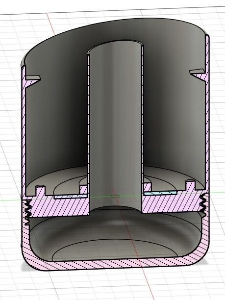
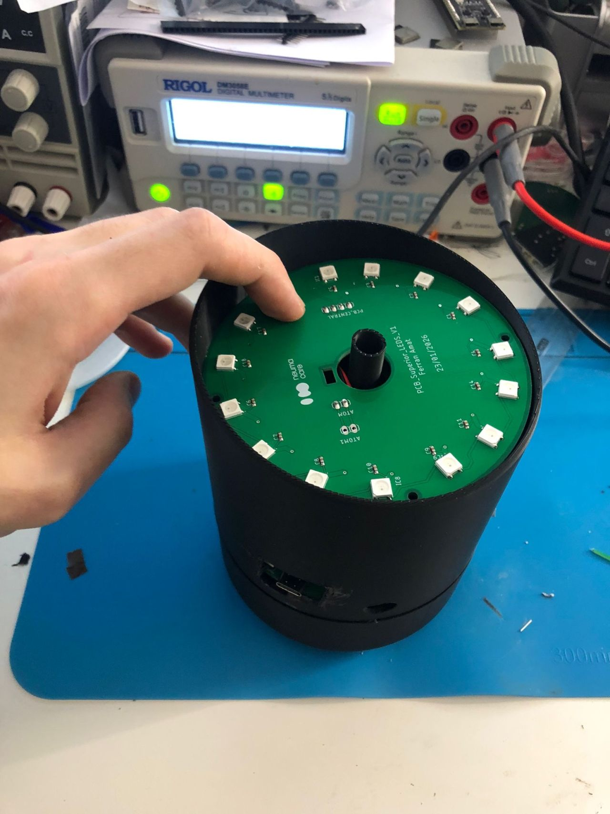

At NeumaCare, we are proud to share a key milestone in our technological journey: the development of our first functional hardware proof of concept in just four weeks. This achievement represents a critical step in transforming our vision into a tangible, testable system.

From Concept To Functional Prototype In Record Time
In less than a month, we have gone from initial design to a working hardware prototype capable of demonstrating the core architecture of our system. This first iteration allows us to better understand how the different components interact, validate system performance, and begin early-stage usability and clinical testing.
This is not just a prototype — it is the foundation upon which we will iterate, refine, and scale our technology.


Engineering Talent Driving Execution
Behind this progress is top-tier technical expertise. Ferran Amat, a telecommunications engineer specialised in systems, with a master's degree in biomedicine and experience in oncology, has led the development of this POC. His profile represents a strong alignment with NeumaCare's interdisciplinary approach, combining engineering precision with clinical understanding.
The ability to translate complex ideas into functional systems in such a short timeframe is what truly accelerates innovation.


A Platform For Validation And Learning
This hardware POC enables us to initiate real-world validation processes. We are now in a position to test system behaviour, gather feedback, and evaluate usability in controlled environments. These early insights will be essential to guide future iterations and ensure that the final product meets both technical and clinical standards.
It also marks the starting point for integrating our software layer and advancing toward a fully orchestrated multisensory system.

What Comes Next
With this first milestone achieved, our focus now shifts toward refinement, scalability, and deeper integration. Each iteration will bring us closer to a robust, deployable solution capable of transforming clinical environments.
And as every product needs a name, we are already thinking ahead. First NeumaPod? Ideas are welcome.


Acknowledgments And Forward Vision
We would like to recognise the effort and commitment behind this achievement. Building a functional system from scratch in such a short period requires not only technical skill, but also vision, focus, and execution capacity.

"At NeumaCare, we continue moving forward with the same conviction: to design intelligent, human-centred clinical environments powered by technology."
— NeumaCare Team